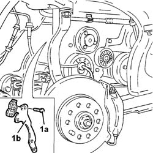
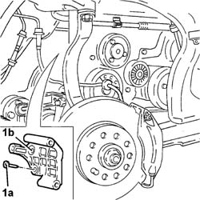

5530A40 Alternator BRACKETS/MOUNT/SPACER - R&R
- Path
- Procedures > 55 ELECTRICAL EQUIPMENT > 5530 CURRENT GENERATION > 5530A ALTERNATOR AND COMPONENTS > 5530A40 Alternator BRACKETS/MOUNT/SPACER - R&R
- Kind
- repair procedure (removal / refitting; the operation number is the code)
- Applies to
- engines: 3.0 V6, 3.2 V6; all production periods
- Interactive page
- https://sloeber94.github.io/elrnDB-lThss/en/#/145861
Applies to: engines: 3.0 V6, 3.2 V6; all production periods
 Removing
Removing
 Refitting
Refitting- Position the vehicle on a lift.
- Open the boot and disconnect the negative battery terminal.
See in Op. 7040D50 ENGINE COMPARTMENT UPPER SOUND INSULATION SHIELD - R.R.
See in Op. 4450B04 Right FRONT WHEEL (one) - R.R.
See in Op. 7055B64 Engine compartment DUST SEAL in front wheel arch (one), left or right - R.R.
See in Op. 7055B54 PROTECTION/GUARD under engine - R.R.
See in Op. 1048A21 AIR INLET HOSE FROM INTAKE TO FILTER - R.R.
See in Op. 1048A28 vacuum air circuit resonator pipe - r+r
See in Op. 1008C10 Power unit REACTION ROD - Replace
See in Op. 1048A11 COMPLETE AIR FILTER -R.R.
See in Op. 1072B50 Air CHAMBER - R.R.
See in Op. 2710A31 INTERMEDIATE DRIVE SHAFT - R.R.
See in Op. 1084B30 CARTRIDGE ENGINE OIL FILTER -R.R.
See in Op. 1076B84 EXHAUST PIPE BETWEEN RIGHT PRECONVERTER AND CATALYTIC CONVERTER - R.R.
-
See in Op. 1080B39 RIGHT CATALYTIC PRECONVERTER - R.R. or Replace Gasket
-
See in Op. 1092G21 Engine components single belt FIXED TENSIONER - R.R. with belt removed
See in Op. 1084A42 Engine oil pressure warning light SWITCH - R.R.
See in Op. 5530A10 ALTERNATOR - R.R.
- Undo the bolt fixing the timing belt to the alternator bracket/spacer.
1. Undo the two bolts (1a) and remove the alternator bracket/spacer (1b).

Applies to: engines: 3.0 V6, 3.2 V6; all production periods
1. Undo the three fixing bolts (1a) and remove the alternator mounting (1b).

Applies to: engines: 3.0 V6, 3.2 V6; all production periods
Refitting
Removing- Fit the alternator mounting and secure it to the crankcase without tightening the bolts to the recommended torque.
 | Value - daNm | Fastening | Component | Ø |
|---|---|---|---|---|
. | 5 | Bolt | FRONT ALTERNATOR SUPPORT | M10 |
- Fit the alternator bracket and secure it tightening the bolts to the recommended torque.
| Value - daNm | Fastening | Component | Ø |
|---|---|---|---|---|
. | 0.6 | Bolt | ALTERNATOR BRACKETS | M6 |
- Tighten the bolt fixing the timing belt cover to the alternator bracket/spacer.
See in Op. 5530A10 ALTERNATOR - R.R.
See in Op. 1084A42 Engine oil pressure warning light SWITCH - R.R.
See in Op. 1092G21 Engine components single belt FIXED TENSIONER - R.R. with belt removed
See in Op. 1080B39 RIGHT CATALYTIC PRECONVERTER - R.R. or Replace Gasket
-
See in Op. 1076B84 EXHAUST PIPE BETWEEN RIGHT PRECONVERTER AND CATALYTIC CONVERTER - R.R.
-
See in Op. 1084B30 CARTRIDGE ENGINE OIL FILTER -R.R.
See in Op. 2710A31 INTERMEDIATE DRIVE SHAFT - R.R.
See in Op. 1072B50 Air CHAMBER - R.R.
See in Op. 1048A11 COMPLETE AIR FILTER -R.R.
See in Op. 1008C10 Power unit REACTION ROD - Replace
See in Op. 1048A28 vacuum air circuit resonator pipe - r+r
See in Op. 1048A21 AIR INLET HOSE FROM INTAKE TO FILTER - R.R.
See in Op. 7055B54 PROTECTION/GUARD under engine - R.R.
See in Op. 7055B64 Engine compartment DUST SEAL in front wheel arch (one), left or right - R.R.
See in Op. 4450B04 Right FRONT WHEEL (one) - R.R.
-
See in Op. 0010T11 ENGINE OIL - Check level and top up if necessary
-
See in Op. 7040D50 ENGINE COMPARTMENT UPPER SOUND INSULATION SHIELD - R.R.
- Connect the negative battery lead, then close the boot.
- Remove the vehicle from the lift.
Topics linked from this page (17)
- 0010T11 ENGINE OIL - Check level and top up if necessary
- 1008C10 Power unit REACTION ROD - Replace
- 1048A11 COMPLETE AIR FILTER -R.R.
- 1048A21 AIR INLET HOSE FROM INTAKE TO FILTER - R.R.
- 1048A28 vacuum air circuit resonator pipe - r+r
- 1072B50 Air CHAMBER - R.R.
- 1076B84 EXHAUST PIPE BETWEEN RIGHT PRECONVERTER AND CATALYTIC CONVERTER - R.R.
- 1080B39 RIGHT CATALYTIC PRECONVERTER - R.R. or Replace Gasket
- 1084A42 Engine oil pressure warning light SWITCH - R.R.
- 1084B30 CARTRIDGE ENGINE OIL FILTER -R.R.
- 1092G21 Engine components single belt FIXED TENSIONER - R.R. with belt removed
- 2710A31 INTERMEDIATE DRIVE SHAFT - R.R.
- 4450B04 Right FRONT WHEEL (one) - R.R.
- 5530A10 ALTERNATOR - R.R.
- 7040D50 ENGINE COMPARTMENT UPPER SOUND INSULATION SHIELD - R.R.
- 7055B54 PROTECTION/GUARD under engine - R.R.
- 7055B64 Engine compartment DUST SEAL in front wheel arch (one), left or right - R.R.